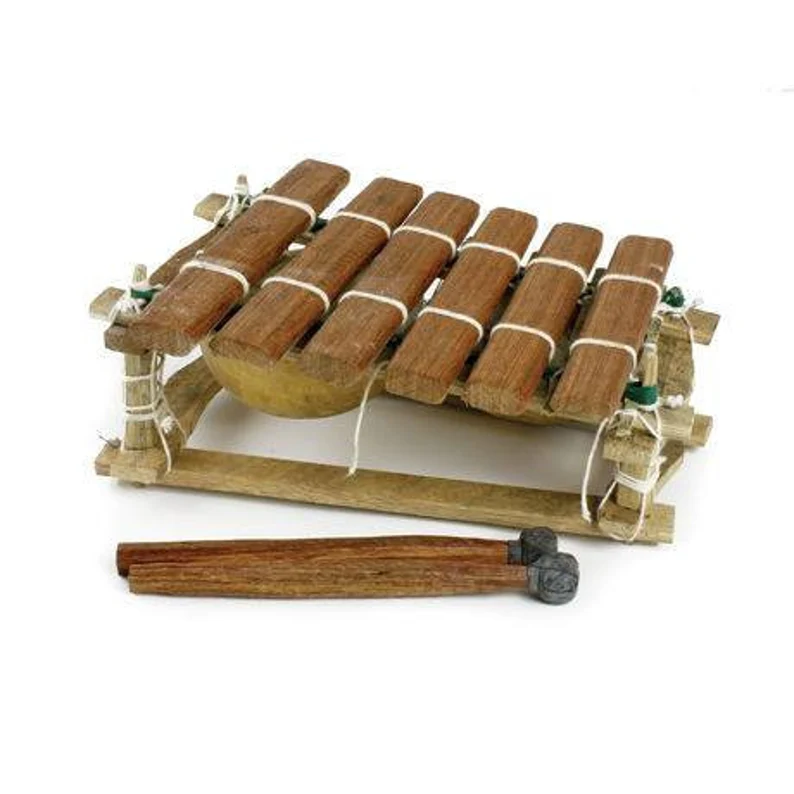

Балафон
Балафон - это удивительный африканский музыкальный инструмент, который отличается своим уникальным звучанием и красивым дизайном. Этот перкуссионный инструмент является важной частью музыкального наследия Западной Африки, внося свой вклад в богатую традицию африканской музыки.
Балафон состоит из деревянных ключей разной длины, уложенных в ряд на деревянной раме. Каждый ключ обычно изготавливается из твёрдого дерева, такого как розовое дерево или махагони. Ключи имеют разную длину, что создает различные тональности. Они поддерживаются резонирующими трубами или кожаными мембранами, расположенными под ключами.
Звучание балафона чарует своей яркостью и энергией. Музыканты играют на инструменте, используя деревянные или резиновые молоточки. Они могут создавать разнообразные мелодии, играть в различных стилях и варьировать динамику звучания. Балафон часто используется для исполнения традиционных мелодий, ритуалов и церемоний, а также в современных музыкальных жанрах.
Музыка, исполняемая на балафоне, несет в себе богатство африканских музыкальных традиций. Инструмент часто ассоциируется с радостью, праздниками и социальными событиями. Звучание балафона приносит в жизнь африканскую культуру, перенося слушателей в мир теплых ритмов и увлекательных мелодий.
Балафон - это не только музыкальный инструмент, но и символ богатства культурного наследия Африки. Его уникальное звучание продолжает вдохновлять музыкантов и ценителей музыки во всем мире, позволяя каждому наслаждаться красотой африканской музыки.